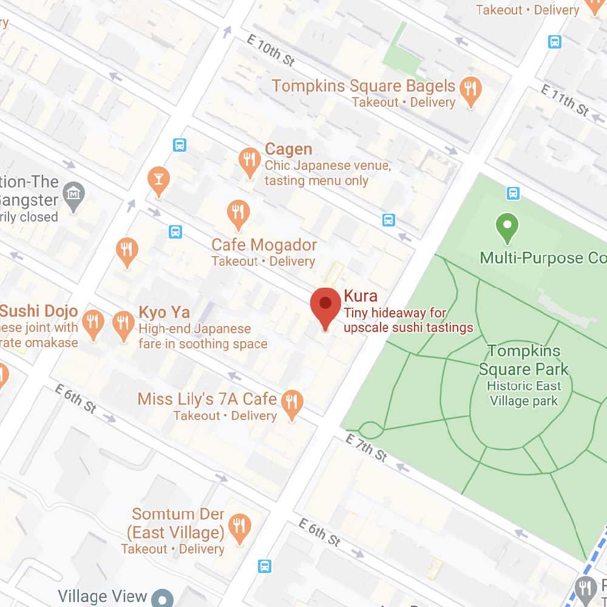
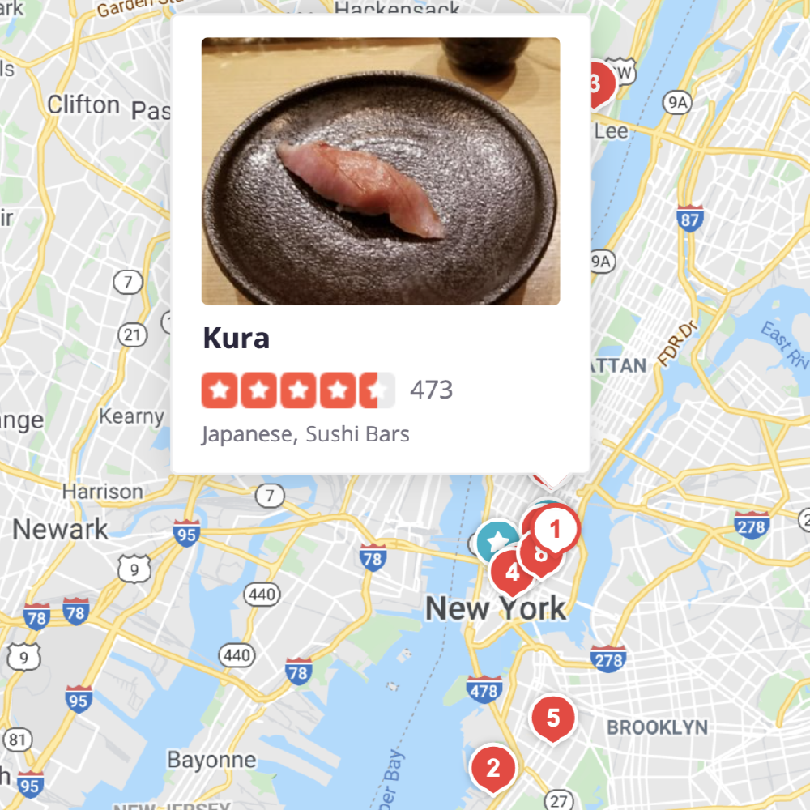

Personal Project — 2020
What To Eat In New York

An interactive site that gives a taste of some of the good eats in New York. In addition, my reiteration of my original site.
Role
Graphic DesignerWeb Designer
Tools
Adobe IllustratorHTML, CSS, JS
Timeline
3 days, Jan 2020

Original design (left) and Redesign (right).
Objective
Make the site more interactive and lively for the user by implementing more actionable features and new colors.
Check out the first iteration here.
Ideation
Although I felt that my site was intuitive for the user, there could be improvements that would further enhance the user experience.
Including direct links to social media pages or Yelp —
Adding an icon hyperlinking to social media pages or Yelp reviews would very much help other users to be more inclined to eat at a certain restaurant based on a whole data of reviews.More animated features —
Adding more animation to my site would improve the interactive space that my website offered, rather than have items fixed to the page itself.Add more contrasted and bright colors —
The current site looked too muted and it was difficult to identify certain features of the site, especially the background. Updating the colors to be vibrant and contrasted with one another would enhance the overall visual experience.

Google
I looked at Google Maps to gain inspiration on map structure and layout. To get provide accuracy on location, I traced a screenshot of New York, and included pins and hover text.

Yelp
I looked at Yelp as inspiration to differentiate pins from one another. Inverting the pin color once the pin was hovered further visually differentiated the locations from one another.
UI Kit

Final
Check out the final site here.
Outcome
Taking upon the task to reiterate my initial designs, I saw the gradual learning aspect of design. I still consider myself a novice in web design, especially with JavaScript. However, challenging myself and completing this project demonstrated that design is a practice and the best thing that I can do is just start and keep learning.
Next steps
Responsive —
To keep my site inclusive to all users - those using different devices (phone, laptop, iPad, etc.), I think another improvement would be to keep my site responsive and compatible with different users.Include icons to insinuate the type of ethnic cuisine —
To give further context on the specific location, including icons would help insinuate the type of ethnic cuisine one is feeling hungry for at the moment.Have whole site within one page —
Having the whole site within one page instead of linked pages would help tie in all elements of the page concisely and smoothly.